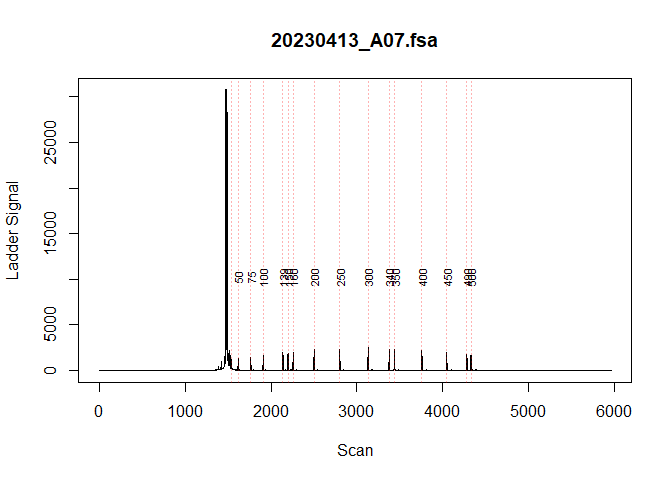
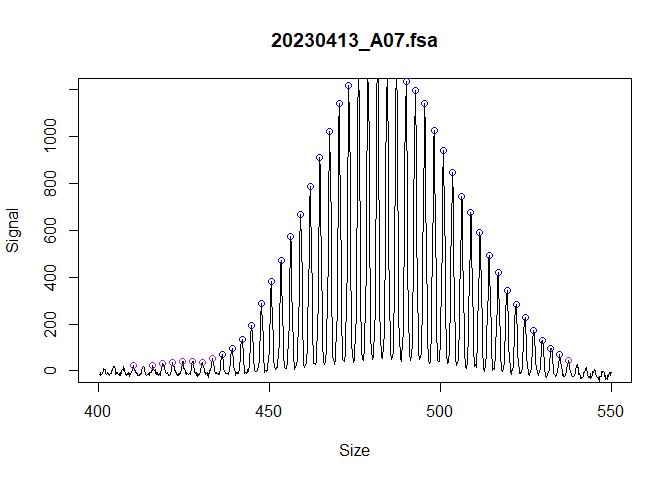
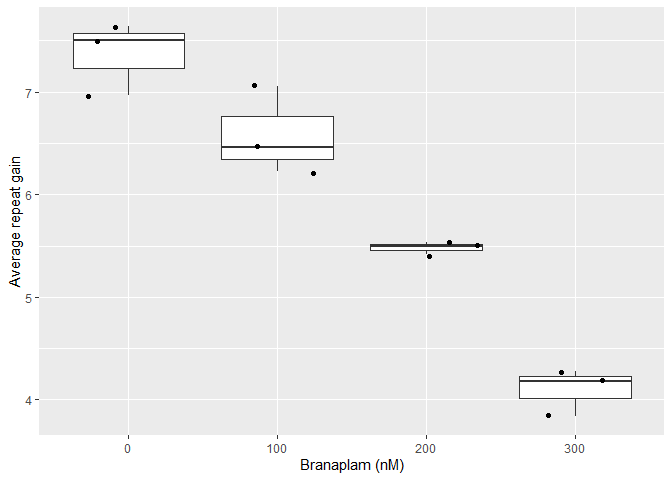

This package provides a pipeline for short tandem repeat instability analysis from fragment analysis data. The inputs are fsa files or peak tables (e.g. Genemapper 5 software peak table output), and a user supplied metadata data-frame. The functions identify ladders, calls peaks, and calculate repeat instability metrics (i.e. expansion index or average repeat gain).
This code is not for clinical use. There are features for accurate repeat sizing if you use validated control samples, but integer repeat units are not returned.
To report bugs or feature requests, please visit the Github issue tracker here. For assistance or any other inquires, contact Zach McLean.
If you use this package, please cite this paper for now.
How to use the package
For an easy way to get started with your own data or to run an example, use trace::generate_trace_template() to generate a document with the pipeline pre-populated.
In this package, each sample is represented by an R6 ‘fragments’ object, which are organized in lists. Functions in the package iterate over these lists, so you usually don’t need to interact with the objects directly. If you do, the attributes of the objects can be accessed with $, and note that most functions modify the objects in place, so re-assignment isn’t necessary. The only exception to that find_fragments(), which transitions to a new object since the class structure changes.
There are several important factors to a successful repeat instability experiment and things to consider when using this package:
(required) Each sample has a unique id, usually the file name
(optional) Baseline control for your experiment. For example, specifying a sample where the modal allele is the inherited repeat length (eg a mouse tail sample) or a sample at the start of a time-course experiment. This is indicated with a
TRUEin themetrics_baseline_controlcolumn of the metadata. Samples are then grouped together with themetrics_group_idcolumn of the metadata. Multiple samples can bemetrics_baseline_control, which can be helpful for the average repeat gain metric to have a more accurate representation of the average repeat at the start of the experiment.-
(optional) Batch or repeat length correction for systematic batch effects that occur with repeat-containing amplicons in capillary electrophoresis.
Repeat containing amplicons do not run linearly with internal ladder sizes in capillary electrophoresis resulting is an underestimation of repeat length if you just convert from base-pair size. These differences are not always consistent across runs which can result in batch effects in the repeat size. So, if the repeat length is to be directly compared for samples from different runs, this batch effect needs to be corrected. This is only relevant when the absolute size of a amplicons are compared for grouping metrics as described above (otherwise instability metrics are all relative and it doesn’t matter that there’s systematic batch effects across runs), when plotting traces from different runs, or if an accurate repeat length is desired.
There are two main correction approaches that are somewhat related: either ‘batch’ or ‘repeat’ in
call_repeats(). Batch correction is relatively simple and just requires you to link samples across batches by indicating them from metadata. But even though the repeat size that is return will be precise, it will not be accurate and underestimates the real repeat length. By contrast, repeat correction can be used to accurately call repeat lengths (which also corrects the batch effects). However, the repeat correction will only be as good as your sample(s) used to call the repeat length, so this can a challenging and advanced feature. You need to use a sample that reliably returns the same peak as the modal peak, or you need to be willing to understand the shape of the distribution and manually validate the repeat length of each control sample for each run.
If starting from fsa files, the GeneScan™ 1200 LIZ™ dye Size Standard ladder assignment may not work very well. The ladder identification algorithm is optimized for GeneScan™ 500 LIZ™ or GeneScan™ 600 LIZ™ or other ladders with relatively few peaks. The 1200 LIZ™ ladder has a challenging pattern of ladder peaks to automatically assign. However, these ladders can be fixed by playing with the various parameters or manually with the built-in fix_ladders_interactive() app.
Installation
You can install from GitHub with:
# install.packages("pak")
pak::pak("zachariahmclean/trace")Then load the package:
Import data
First, we read in the raw data. In this case we will used example data within this package, but usually this would be fsa files that are read in using read_fsa(). The example data is also cloned since the next step modifies the object in place.
fsa_list <- lapply(cell_line_fsa_list, function(x) x$clone())Find ladders
The known ladder sizes are assigned to peaks in the ladder channel and bp are predicted for each scan.
find_ladders(
fsa_list,
show_progress_bar = FALSE
)visually inspect each ladder to make sure that the ladders were correctly assigned
plot_ladders(fsa_list[1])
If the ladders are are not assigned correctly, you can adjust parameters or manually using the built-in fix_ladders_interactive() app.
Find fragments
The fragment peaks are identified in the raw continuous trace data. These objects are assigned because find_fragments transitions to a new object since the class structure changes. This reflects the data moving from a continuous trace to a peak table.
fragments_list <- find_fragments(
fsa_list,
min_bp_size = 300
)Visually inspect the traces and called peaks to make sure they were correctly assigned.
plot_traces(fragments_list[1],
xlim = c(400, 550),
ylim = c(0, 1200)
)
Alternatively, this is where you would use data exported from Genemapper if you would rather use the Genemapper bp sizing and peak identification algorithms. However, this is not recommended as some of the functionality of this package would not be accessible (mainly in call_repeats(), with batch_correction and repeat calling algorithms)
fragments_list_genemapper <- peak_table_to_fragments(example_data,
data_format = "genemapper5",
dye_channel = "B",
min_size_bp = 300
)Add metadata
Metadata can be incorporated to allow additional functionality in call_repeats() (batch or repeat correction) and assign_index_peaks() (assigning index peak from another sample). Prepare a file (eg spreadsheet saved as .csv) with the following columns. If you use the specified column names, it will be automatically parsed by add_metadata(), otherwise you will need to match up which column name belongs to which metadata category (as done below in add_metadata()):
| Metadata table column | Functionality metadata is associated with | Description |
|---|---|---|
| unique_id | Required for adding metadata using add_metadata()
|
The unique identifier for the fsa file. Usually the sample file name. This must be unique, including across runs. |
| metrics_group_id |
assign_index_peaks(), allows setting grouped
|
This groups the samples for instability metric calculations. Provide a group id value for each sample. For example, in a mouse experiment and using the expansion index, you need to group the samples since they have the same metrics baseline control (eg inherited repeat length), so provide the mouse id. |
| metrics_baseline_control |
assign_index_peaks(), allows setting grouped
|
This is related to metrics_group_id. Indicate with ‘TRUE’ to specify which sample is the baseline control (eg mouse tail for inherited repeat length, or day-zero sample in cell line experiments) |
| batch_run_id |
call_repeats(), allows setting correction = “batch” or “repeat” |
This groups the samples by batch. Provide a value for each fragment analysis run (eg date). |
| batch_sample_id |
call_repeats(), allows setting correction = “batch” or “repeat” |
This groups the samples across batches. Give a unique sample id to each different sample. |
| batch_sample_modal_repeat |
call_repeats(), allows setting correction = “repeat” |
The validated modal repeat length for the particular batch_sample_id sample used to accurately call repeat length. |
add_metadata(
fragments_list = fragments_list,
metadata_data.frame = metadata,
unique_id = "unique_id",
metrics_group_id = "metrics_group_id",
metrics_baseline_control = "metrics_baseline_control",
batch_run_id = "batch_run_id",
batch_sample_id = "batch_sample_id",
batch_sample_modal_repeat = "batch_sample_modal_repeat"
)Identify modal peaks and call repeats
Next we identify the modal peaks with find_alleles() and convert the base pair fragments to repeats with call_repeats().
find_alleles(fragments_list)
call_repeats(fragments_list)We can view the distribution of repeat sizes and the identified modal peak with a plotting function.
plot_traces(fragments_list[1], xlim = c(110, 150))Assign index peaks
A key part of several instability metrics is the index peak. This is the repeat length used as the reference for relative instability metrics calculations, like expansion index or average repeat gain. In the metadata, samples are grouped by a metrics_group_id and a subset of the samples are set as metrics_baseline_control, meaning they are the samples taken at day 0 in this experiment. This allows us to set grouped = TRUE and set the index peak for the expansion index and other metrics. For mice, if just a few samples have the inherited repeat signal shorter than the expanded population, you could not worry about this and instead use the index_override_dataframe in assign_index_peaks().
assign_index_peaks(
fragments_list,
grouped = TRUE
)We can validate that the index peaks were assigned correctly with a dotted vertical line added to the trace. This is perhaps more useful in the context of mice where you can visually see when the inherited repeat length should be in the bimodal distribution.
plot_traces(fragments_list[1], xlim = c(110, 150))Calculate instability metrics
All of the information we need to calculate the repeat instability metrics has now been identified. We can finally use calculate_instability_metrics to generate a dataframe of per-sample metrics.
metrics_grouped_df <- calculate_instability_metrics(
fragments_list = fragments_list,
peak_threshold = 0.05
)These metrics can then be used to quantify repeat instability. For example, this reproduces Figure 7e of our manuscript.
First, prepare the data for plotting by removing poor quality samples and finding the average repeat gain relative to the DMSO group for each cell line
library(dplyr)
plot_data <- metrics_grouped_df |>
dplyr::left_join(metadata, by = dplyr::join_by(unique_id)) |>
dplyr::filter(
day > 0,
modal_peak_signal > 500
) |>
dplyr::group_by(metrics_group_id) |>
dplyr::mutate(
rel_gain = average_repeat_gain / median(average_repeat_gain[which(treatment == 0)]),
genotype = forcats::fct_rev(genotype)
)Then we can plot the instability metrics
library(ggplot2)
ggplot(
plot_data,
aes(genotype, rel_gain, colour = genotype)
) +
geom_boxplot(outlier.shape = NA) +
geom_jitter() +
facet_wrap(vars(as.factor(treatment)), nrow = 1) +
labs(
y = "Average repeat gain\n(relative to DMSO)",
x = "PMS1 pseudoexon status"
) +
theme(legend.position = "none")